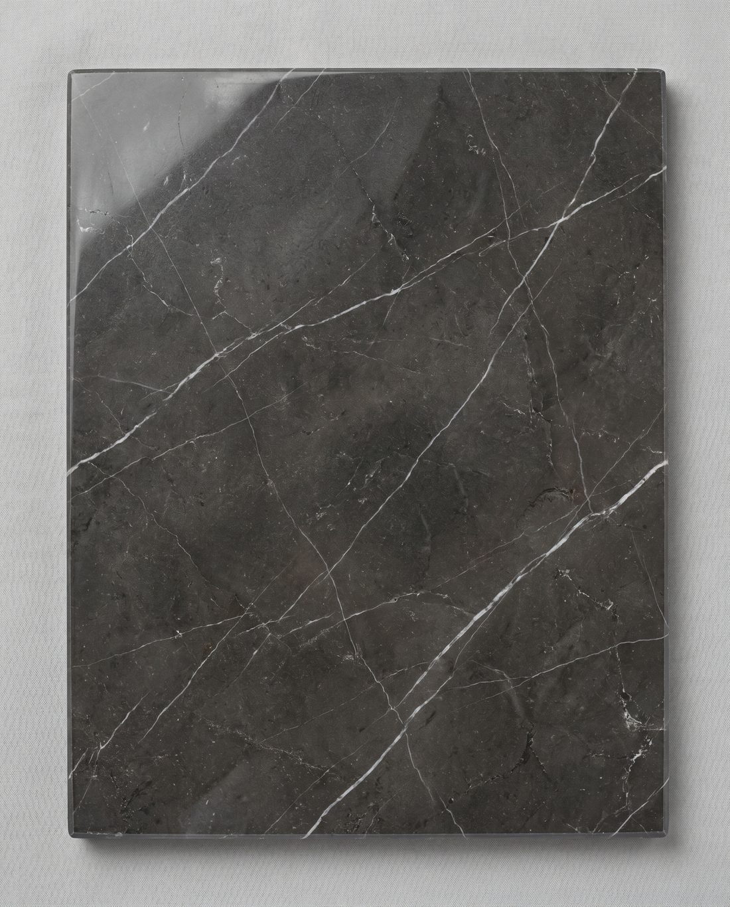

01 / Marble

Marble · Signature line
Pietra Grey
a.k.a. Persian Grey · Negro / Grafito Marquina alternative
A deep charcoal-graphite marble crossed by clean white veins. Bookmatched, it produces the dramatic mirrored feature walls people associate with luxury hospitality; honed flat, it becomes a quiet, architectural floor. Dense and even-grained, it polishes to a high gloss and takes a leathered finish beautifully. Our most-requested stone for Armenian interiors.
- Origin
- Iran — Khorasan
- Type
- Marble
- Finishes
- Polished · Honed · Leather
- Formats
- Slabs · Cut-to-size · Tile
- Gauge
- 2 cm · 3 cm
- Colour
- Charcoal & white vein
Where it works
Feature wallsFlooringWorktopsStairsReception fronts